Programação Estruturada
UFABC
2026-11-06
Queremos inserir o valor 20 entre 10 e 30.
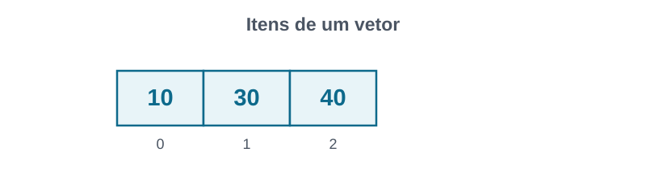
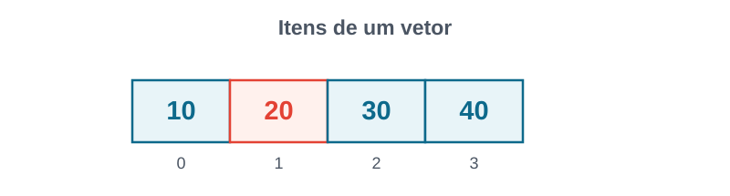
Precisamos deslocar elementos.
Vantagens
v[i] em tempo constante.Desvantagens
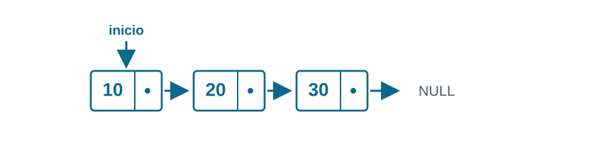
Ideia de Listas Ligadas:
| Vetor | Lista ligada |
|---|---|
Acesso direto a v[i] |
Para acessar uma posição, percorremos os nós |
| Inserção/deleção exige deslocamentos | Inserção/deleção sem deslocamento |
| Memória contígua | Memória distribuida |
Não existe uma representação melhor. Depende do caso.
Um nó armazena:
valor);prox).inicio guarda o endereço do primeiro nó.prox == NULL.Basta saber o inicio da lista para maniplar ela!
inicio aponta para NULL.Crie três nós (usando malloc), com valores 10, 20 e 30.
Objetivo: Criar lista onde inicio aponta para 10, que aponta para 20, que aponta para 30.
Dada uma lista, queremos inserir o valor 5 como primeiro elemento.
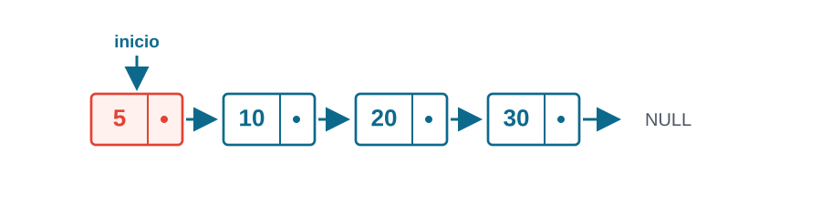
No *inserir_inicio(No *inicio, int valor) {
No *novo = malloc(sizeof *novo);
if (novo == NULL) return inicio; // Alternativa: erro
novo->valor = valor;
novo->prox = inicio;
return novo;
}Uso:
Em C, os parâmetros são passados por valor.
inicio dentro da função é uma cópia do ponteiro.Suponha que já temos o endereço do nó com valor 10.
Queremos inserir 20 depois dele, antes de 30.
// Retorna 1 em caso de sucesso; 0 caso contrário.
int inserir_apos(No *pos, int valor) {
No *novo = malloc(sizeof *novo);
if (pos == NULL || novo == NULL) return 0;
novo->valor = valor;
novo->prox = pos->prox;
pos->prox = novo;
return 1;
}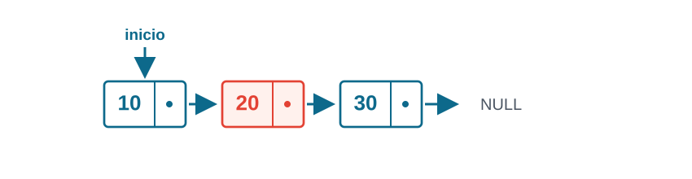
Correto:
Incorreto:
No segundo caso, novo->prox aponta para o próprio novo!
Perdemos o caminho até os nós seguintes.
Queremos imprimir todos os valores, do início ao fim.
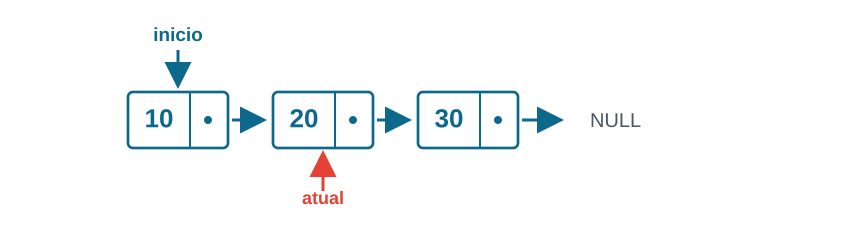
Resultado desejado:
void imprimir(const No *inicio) {
const No *atual = inicio;
while (atual != NULL) {
printf("%d ", atual->valor);
atual = atual->prox;
}
}atual percorre a lista.inicio continua apontando para o primeiro nó.NULL.Ideia de uma implementação recursiva: imprimir o primeiro valor e depois imprimir a sublista restante.
Queremos procurar um valor e devolver o endereço do primeiro nó que o contém.
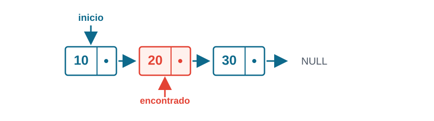
NULL.No *buscar(No *inicio, int valor) {
No *atual = inicio;
while (atual != NULL) {
if (atual->valor == valor) return atual;
atual = atual->prox;
}
return NULL;
}Podemos usar a busca para encontrar onde inserir:
Podemos fazer a busca de forma recursiva
No *buscar_r(No *inicio, int valor) {
if (inicio == NULL) return NULL;
if (inicio->valor == valor) return inicio;
return buscar_r(inicio->prox, valor);
}A versão recursiva também percorre os nós até encontrar o valor.
Cada nó foi criado com malloc. Precisamos chamar free para cada um.
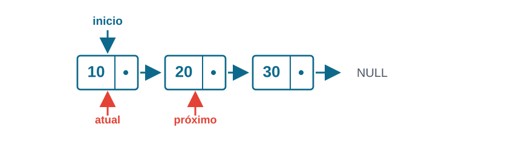
Como liberar o nó atual sem perder o endereço do próximo?
void liberar(No *inicio) {
No *atual = inicio;
while (atual != NULL) {
No *proximo = atual->prox;
free(atual);
atual = proximo;
}
}Uso:
freeIncorreto:
Após free(atual), não podemos acessar atual->prox.
Correto:
Podemos liberar primeiro o restante da lista e depois o nó atual.
Queremos remover a primeira ocorrência de um valor.
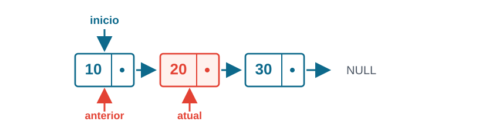
Precisamos tratar casos diferentes: remover o primeiro, um nó do meio, ou um valor inexistente.
Antes
Depois
anterior->prox deve apontar para o próximo nó.anterior == NULL?No *remover(No *inicio, int valor) {
No *anterior = NULL;
No *atual = inicio;
while (atual != NULL && atual->valor != valor) {
anterior = atual;
atual = atual->prox;
}
if (atual == NULL) return inicio;
if (anterior == NULL) inicio = atual->prox;
else anterior->prox = atual->prox;
free(atual);
return inicio;
}inicio precisa mudar.Se houver valores repetidos, removemos apenas a primeira ocorrência.
Na recursão, remover um elemento pode mudar o início da sublista.
Se a primeira posição contém o valor, o que devemos retornar? E se não contém?
inicio->prox.inicio->prox.A ideia é a mesma da inserção no início: quando o primeiro nó muda, precisamos atualizar o ponteiro que aponta para ele.
Queremos adicionar 40 após o último nó.
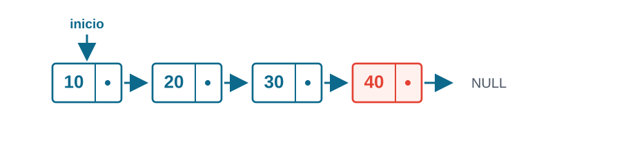
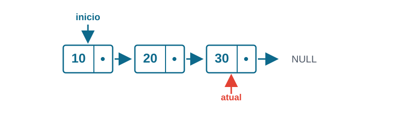
O trabalho cresce proporcionalmente ao tamanho da lista.
Podemos pensar na inserção a partir da sublista inicio->prox.
Como atualizar inicio->prox ao voltar da chamada recursiva?
As duas versões precisam chegar ao último nó.
atual.Podemos evitar o percurso se guardarmos o endereço do último nó?
struct para representar a listaEm vez de guardar só o primeiro nó, podemos guardar o primeiro e o último.
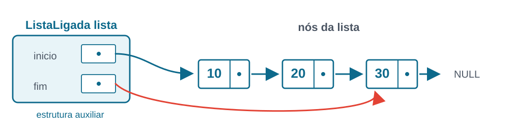
struct ListaLigada não é um nóprox para participar do encadeamento.ListaLigada lista;.malloc.Os nós ainda são alocados com malloc. A estrutura auxiliar e os nós têm papéis diferentes.
ListaLigadaLista vazia: os dois ponteiros devem valer NULL.
Lista vazia:
Lista não vazia:
inicio aponta para o primeiro nó.fim aponta para o último nó.fim->prox == NULL.Toda operação que modifica a lista deve preservar esses invariantes.